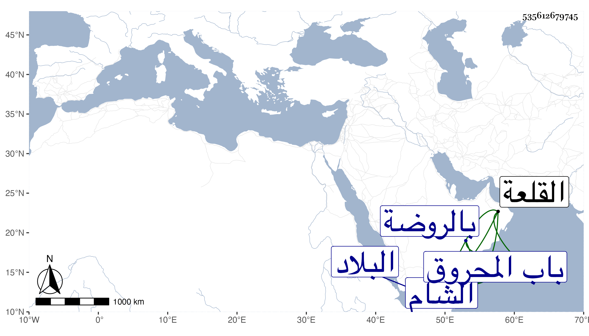

0902Sakhawi.DawLamic.ITO20230111-ara1.EIS1600.535612679745
Biography ID: 535612679745
532
محمد بن حاجي بن محمد بن قلاوون المنصور ناصر الدين أبو المعالي بن المظفر بن الناصر بن المنصور. ولد سنة ثمان وأربعين وسبعمائة واستقر في المملكة بعد القبض على عمه الناصر حسن في تاسع جمادى الأولى سنة وستين وسبعمائة وهو ابن نحو أربع عشرة سنة بقيام الأتابك يلبغا العمري الخاصكي وتدبيره بل لم يكن هذا معه سوى بالاسم ولم يلبث أن خرج به إلى البلاد الشامية حين خروج بيدمر الخوارزمي نائب الشام عن الطاعة وعاد به سريعا بعد أخذ بيدمر صلحا إلى أن خلعه بابن عمه الأشرف شعبان بن حسين في منتصف شعبان سنة أربع وستين لأنه بعد رجوعه كثر أمره ونهيه فخشي يلبغا منه وأشاع أنه مجنون وجعل ذلك سبب خلعه فكانت مدته سنتين وثلاثة أشهر وخمسة أيام وألزمه داره من القلعة إلى أن مات في ليلة السبت تاسع المحرم سنة إحدى وقد زاد على الخمسين وصلى عليه الظاهر برقوق بالحوش السلطاني من القلعة وقرر لأولاده وهم عشرة راتبا ودفن بتربة جدته أم أبيه بالروضة خارج باب المحروق وكان محبا للطرب واللهو عفا الله عنه ، ذكره شيخنا في أنبائه باختصار والمقريزي في عقوده .
